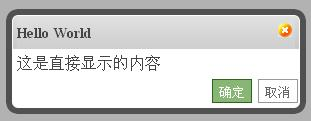
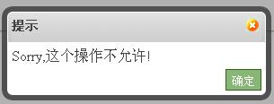
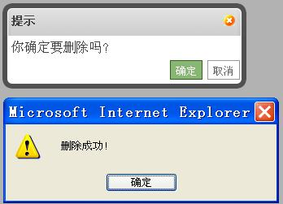
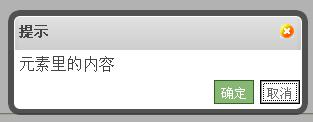
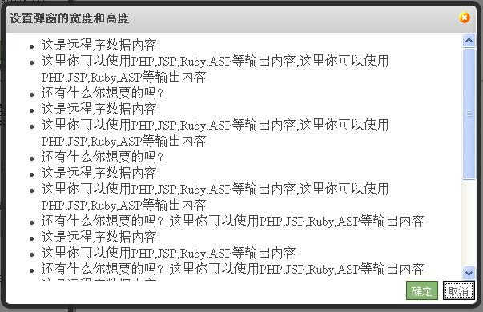
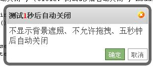

直接显示内容
$("#test1").click(function(){
$.weeboxs.open('这是直接显示的内容', {title: 'Hello World'});
});

弹窗的Alter类型
$("#test2").click(function(){
$.weeboxs.open('Sorry,这个操作不允许!', {title:'提示', type:'alert'});
});

打开、确定、取消、关闭的事件
$("#test3").click(function(){
$.weeboxs.open('弹窗事件测试？', {
title:'提示',
onopen:function() {
alert('取得内容后，显示弹窗前。');
},
onok:function(){
alert('点击确定按钮后!');
box.close();//增加事件方法后需手动关闭弹窗
},
oncancel:function(){
alert('点击取消按钮后！');
box.close();//增加事件方法后需手动关闭弹窗
},
onclose:function(){
alert('弹窗关闭前');
}
});
});

使用jQuery的选择器为弹窗提供内容
$("#test4").click(function(){
$.weeboxs.open('#boxcontent', {title:'提示'});
});
<div style="display:none" id="boxcontent">ID方式取元素里的内容</div>
$("#test5").click(function(){
$.weeboxs.open('.boxcontent', {title:'提示',contentType:'selector'});
});
<div style="display:none" class="boxcontent">Class方式元素里的内容</div>

ID方式取元素里的内容
Class方式元素里的内容
使用Ajax的方式为弹窗提供内容
$("#test6").click(function(){
$.weeboxs.open('ajax.html', {title:'AJAX得到服务器上的内容', contentType:'ajax'});
});

设置弹窗的宽度和高度
$("#test7").click(function(){
$.weeboxs.open('ajax2.html', {title:'设置弹窗的宽度和高度', contentType:'ajax', width:600, height:300});
//dialog默认宽度为300,高度是自适应的
});

不显示背景遮照、不允许拖拽、自动关闭
$("#test8").click(function(){
$.weeboxs.open('不显示背景遮照、不允许拖拽、五秒钟后自动关闭', {title:'测试5秒后自动关闭', modal:false, draggable:false, timeout:5,
onopen:function(box){
var closetime = parseInt(box.dt.find('b').html(),10);
var handle = setInterval(function(){
alert(1);
closetime--;
box.dt.find('b').html(closetime+'');
if (closetime<=0) clearInterval(handle);
}, 1000);
}
});
});
